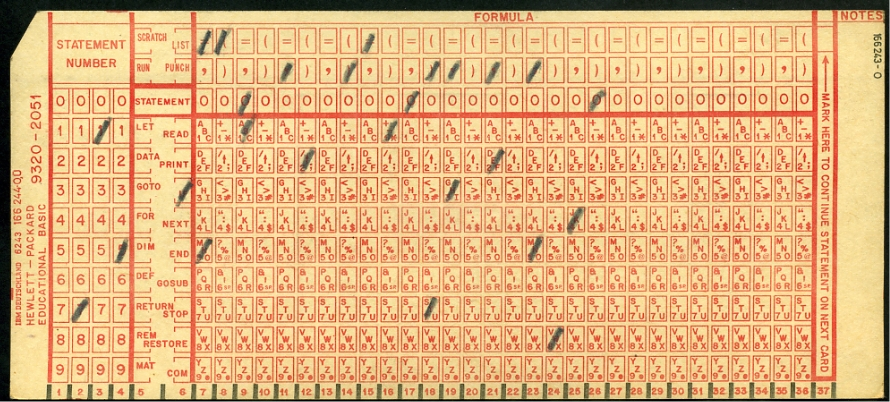
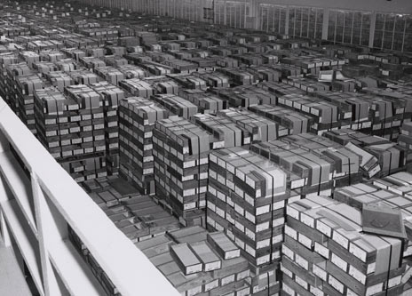
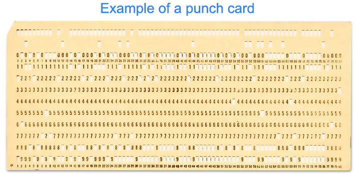
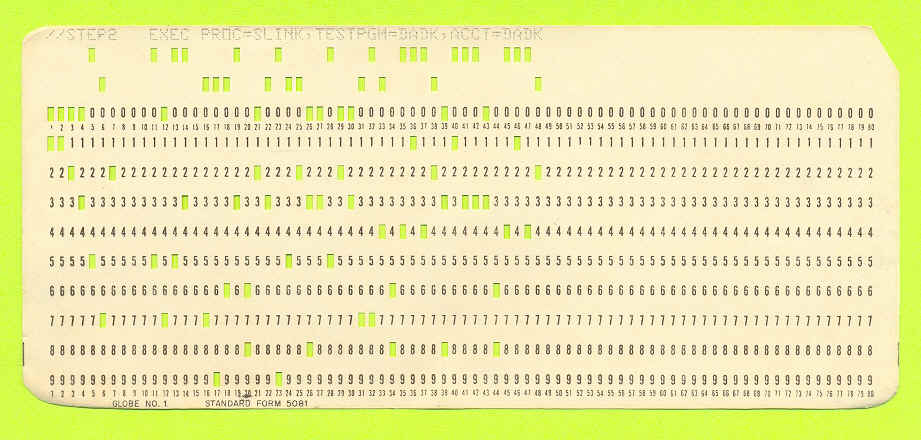
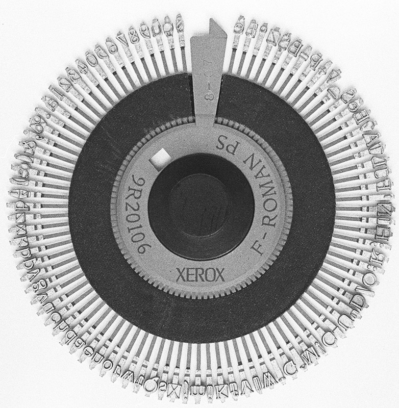
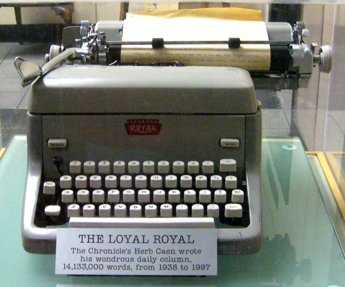
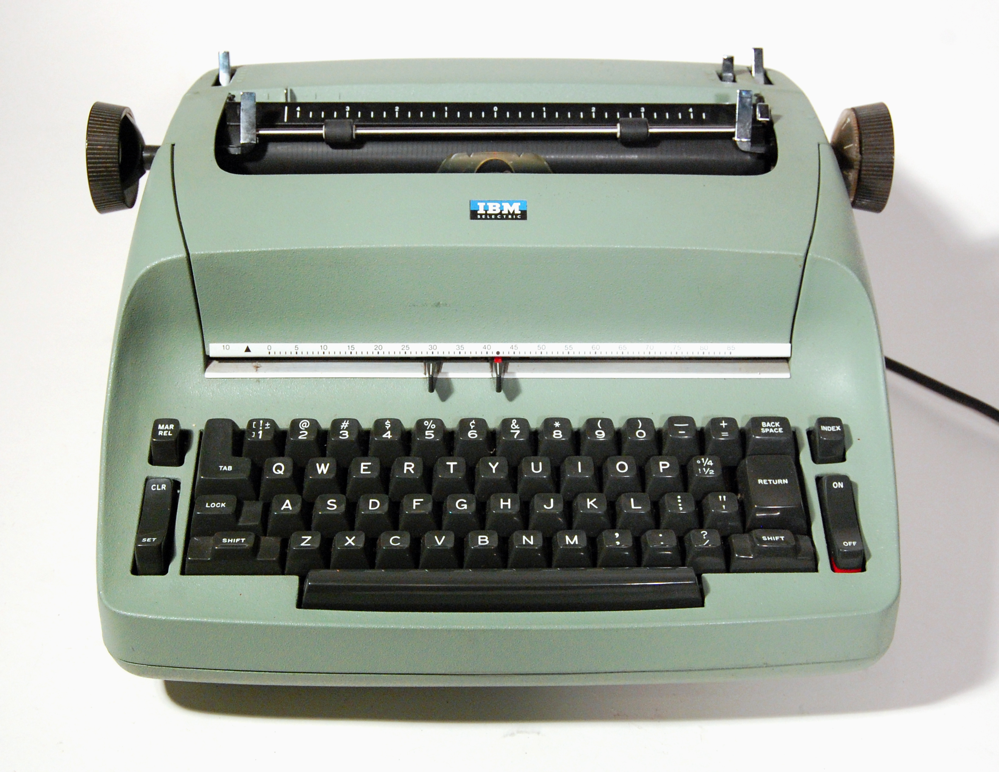

Operating Systems
Ahmad Yoosofan
University of Kashan
Introduction
Course Review
- Introduction
- Process
- Multiprogramming
- multithread
- Synchronization
- Deadlock
- Eavluation
- Secondary Storage
- Disks
- file organization
- Main Memory
- Absolute Address
- Relative Address
- paging
- Virtual Memory
- segmentation
- segmentation and paging combinations
- Invert table
Making an imaginary computer step by step
Finding more about how hardware and software works
- It needs to go back to principles
- It provides clear path for what we already have
- Understanding that why computers works this way nowadays

Mechanical Calculator
Pascaline
- A Pascaline signed by Pascal in 1652
- https://en.wikipedia.org/wiki/Pascaline

Jacquard Machines
- Joseph Marie Jacquard in 1804
- based on
- the Frenchmen Basile Bouchon (1725)
- Jean Baptiste Falcon (1728)
- Jacques Vaucanson (1740).[8]
- https://en.wikipedia.org/wiki/Jacquard_machine


Analog vs Digital
- https://en.wikipedia.org/wiki/Capacitance
- https://www.geeksforgeeks.org/difference-between-analog-computer-and-digital-computer/

Digital Computer
- Vacuum-tube computer
- Atanasoff–Berry computer
- neither programmable, nor Turing-complete
- Colossus computer
- British code breakers
- programmable
- electronic
- digital computer
- programmed by switches and plugs
- not by a stored program

Stored Program
- Manchester Mark I
- The 1946 ENIAC computer used more than 17,000 vacuum tubes
- bootstrap_computer_history
- oldest-original-working-digital-computer

Analog Chipsets for AI Applications
- Developers Turn To Analog For Neural Nets
- Texas Instuments
- IIC
- Analog Neural Circuit and Hardware Design of Deep Learning Model
- The Promise of Analog Deep Learning: Recent Advances, Challenges and Opportunities
- Harnessing Analog Hardware for Machine Learning
- Developers Turn To Analog For Neural Nets

General Types of Computers
- Analog Computer
- pros
- cons
- Digital Computer
- pros
- cons
- Quantum Computer
- pros
- cons

Imaginary Computer (YIC-220)
Different memory for code and data


Real Motherboard

Motherboard Circut


The Second Imaginary Computer
Uniform memory (John von Neumann)
 |  |

ADD A,B A = A + B ; 0101011 00010101 0101010 OPcode DATA_1 DATA_2 ADD A B R1 = R2 + R3 ADD R1, R2, R3 ; 010101001 0001 0010 0011 OP Code R1 R2 R3 010101001000100100011

Instruction Set(I)
AND: Logical AND memory with AC ADD: Arithmetic ADD memory with AC LDA: Load from memory to AC STA: Store AC to memory BUN: Branch unconditional ISZ: Increment and skip if zero CLA: Clear AC CLE: Clear E CMA: Complement AC CME: Complement E CIR: Circulate right (AC and E) CIL: Circulate left (AC and E)
INC: Increment AC SPA: Skip if positive AC SNA: Skip if negative AC SZA: Skip if zero AC SZE: Skip if zero E HLT: Halt OUT: Output a character from AC SKO: Skip if output flag NOP: No operation
Instruction Set Bianary(I)
AND: 00001 ADD: 00010 LDA: 00011 STA: 00100 BUN: 00101 ISZ: 00110 CLA: 00111 CLE: 01000 CMA: 01001 CME: 01010 CIR: 01011 CIL: 01100
INC: 01101 SPA: 01110 SNA: 01111 SZA: 10000 SZE: 10001 HLT: 10010 OUT: 10011 SKO: 10100 NOP: 10101
hex pad connect to microcontroller
https://www.circuitstoday.com/interfacing-hex-keypad-to-8051
https://circuitdigest.com/microcontroller-projects/keypad-interfacing-with-avr-atmega32
Example
- https://github.com/yoosofan/mano-computer-simulator-js
- https://yoosofan.github.io/mano-computer-simulator-js/
- https://github.com/Naheel-Azawy/Simple-Computer-Simulator/blob/master/test/test-symbolic
- https://github.com/Naheel-Azawy/Simple-Computer-Simulator/blob/master/test/test
- https://github.com/Naheel-Azawy/Simple-Computer-Simulator/tree/master/test
Other assembly
- http://imrannazar.com/arm-opcode-map
- https://iitd-plos.github.io/col718/ref/arm-instructionset.pdf
- https://wiki.osdev.org/X86-64_Instruction_Encoding
- https://cs.brown.edu/courses/cs033/docs/guides/x64_cheatsheet.pdf
- https://sites.google.com/site/nttrungmtwiki/home/rce/assembly-language/x64-opcode-and-instruction-reference-home
- http://ref.x86asm.net/coder64.html
- arm 32 opcodes
- http://z80-heaven.wikidot.com/instructions-set:ld
- http://z80-heaven.wikidot.com/opcode-reference-chart
- https://smallcomputercentral.files.wordpress.com/2017/12/asm80-com-tutorial-e1-0-01.pdf
- https://stackoverflow.com/questions/22838444/convert-an-8bit-number-to-hex-in-z80-assembler
- https://www.vcfed.org/forum/forum/technical-support/vintage-computer-programming/76419-z80-hello-world-example-in-hex
- https://www.cemetech.net/forum/viewtopic.php?t=15710&start=0
- z80 assembly codes
00101 00000 1010 00110 00000 1100 00111 00000 1110 01000 00000
اگر حداکثر ۳۲ دستور داشته باشیم پس پنج بیت برای دستورها نیاز داریم برای سادگی فرض میکنیم که طول همهٔ دستورها یکسان است یعنی هم دو بایت را میگیرند فرض کنید دستورها پنج بیت نیاز دارند پس ۱۱ بیت برای آدرس
حداکثر حافظهٔ این کامپیوتر چقدر میتواند باشد. اگر بخواهیم بایتی آدرس دهی کنیم
۲^۱۱ = ۲kB
B = Byte
اگر آدرسدهی را دو بایتی در نظر بگیریم
۴kB (word = 2 byte)
Main Type of Processors
- RISC (Reduced instruction set computer)
- CISC (Complex Instruction Set Computer)
Output
LED
seven segment
Output Problem
lda a add b sta c out hlt a, 5 b, 2 c, 0
.......... .......... LB1: out sko bun LB1 ........... ...........
Hardware vs Software
- pros
- Less code
- More speed
- Less errors of writing code
- cons
- Cost
- Less Flexible
Processor Series
BSA
Function call


Device Drivers
Simple computer simulator
- https://github.com/jeaniehandler/OS
- https://github.com/Naheel-Azawy/Simple-Computer-Simulator
- https://web.njit.edu/~carpinel/Applets.html
- http://www.science.smith.edu/dftwiki/index.php/IBooks
- http://www.science.smith.edu/dftwiki/index.php/
Simple Computer Simulator Instruction Set


Arduino Print 4 to 7-segment
#include "SevSeg.h" SevSeg sevseg; void setup(){ byte numDigits = 1; byte digitPins[] = {}; byte segmentPins[] = {6, 5, 2, 3, 4, 7, 8, 9}; bool resistorsOnSegments = true; byte hardwareConfig = COMMON_CATHODE; sevseg.begin(hardwareConfig, numDigits, digitPins, segmentPins, resistorsOnSegments ); sevseg.setBrightness(90); } void loop(){ sevseg.setNumber(4); sevseg.refreshDisplay(); }
Segment Pin | Arduino Pin |
|---|---|
A | 6 |
B | 5 |
C | 2 |
D | 3 |
E | 4 |
F | 7 |
G | 8 |
DP | 9 |


Connecting 4 Digit 7-Segment Displays

Hardware insead of Software


IBM 011 Electric Key Punch(1923)

- columbia.edu <http://www.columbia.edu/cu/computinghistory/oldpunch.html>-
IBM Type 032 Printing Punch(1935)
- columbia.edu <http://www.columbia.edu/cu/computinghistory/oldpunch.html>-

Card Mark sense format
Cartons of Punch cards(1959)
In a United States National Archives Records Service facility in 1959. Each carton could hold 2,000 cards
Pile of Punch cards

Punched Card Printing Plate

Example of a Punch Card

A 5081 Card from a non-IBM Manufacturer
Punched card from a Fortran program
Z(1) = Y + W(1), plus sorting information in the last 8 columns

Punch Card Machine


Other Links for Punch Card Machines
Tape

Xerox Roman PS Daisywheel
Royal Typewriter Company since 1906
IBM Selectric Typewriter 1961(I)


The common segment displays


Split-flap display(II)


Flip-Dot-Display


When a controller rapidly turns on LEDs in one row at a time

https://www.nutsvolts.com/magazine/article/create-an-led-sign-controller
GET THE DOTS, FORM A LETTER using ROM

https://www.nutsvolts.com/magazine/article/create-an-led-sign-controller
Showing Character D

https://www.deviceplus.com/arduino/display-characters-with-leds-how-to-use-a-matrix-led/
Showing Character D (real refresh)

https://www.deviceplus.com/arduino/display-characters-with-leds-how-to-use-a-matrix-led/

Dot-matrix display

- 128×16 (Two-lined)
- 128×32 (Four-lined)
- 128×64 (Eight-lined)
- 92×31 (Four or three-lined)
- https://en.wikipedia.org/wiki/Dot-matrix_display
- https://en.wikipedia.org/wiki/History_of_display_technology

Printer Function

Process along Printer Function

Call Printer Function

Return from Printer Function

Old Display Function and Printer Function

Card reader instead of Hex pad input

Display
IBM 3270 Display Terminal
{kind=link}
BIOS


Boot sequence


- IEEE Std 1275 1994 Standard for boot initialization
- https://openfirmware.info/Welcome_to_OpenBIOS
- https://github.com/openbios
- https://github.com/openbios/openbios
Context Switch
END